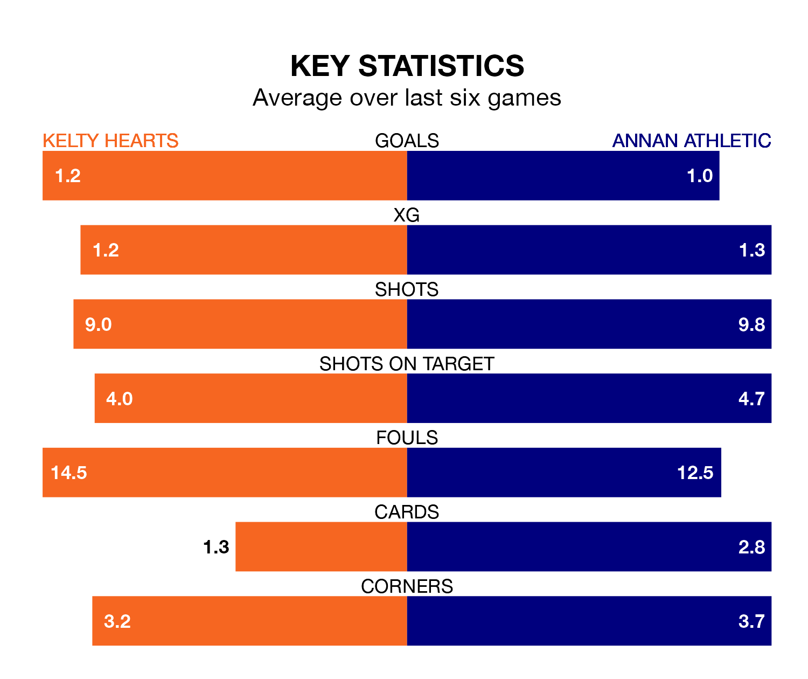

Annan Athletic come to New Central Park to play Kelty Hearts on Saturday in terrible form, having collected just two points from their last six games.
The visitors have drawn two and lost four of their last six fixtures, while Kelty Hearts have a win and two draws.
Annan are ninth in the table after 19 games, of which they have won two and drawn six, earning 12 points.
Kelty Hearts are three places ahead of Athletic in sixth, with six wins and five draws putting them on 23 points.
With 23 goals in 19 games so far this season, the Galabankies are the league's second-lowest scorers with 1.2 goals per game. And they are conceding more than average, letting in 41 goals at a rate of 2.2 per game.
The hosts are also below average scorers, with 1.4 goals per game, compared to a league average of 1.5. They have conceded 1.5 goals per game.
In Dominic Docherty and Thomas Goss, the away team have two of the league's most on-form strikers so far this season. They have notched five goals each, to sit eighth in the scoring charts.
Kelty Hearts's top scorers, with four goals each, are Lewis Moore and Reece Lyon.
Over the last two years, Kelty Hearts and Annan have played each other on five occasions. Kelty Hearts won three of them and they drew twice.
On average, Kelty Hearts scored 2.0 goals and the Galabankies 1.2 in those matches.
Their last meeting was on November 4, when they played out a 2-2 draw.
Kelty Hearts's last match was on January 6, a 2-2 draw against Cove Rangers, with Adam Corbett and Alfie Bavidge getting the goals for Kelty Hearts.
Annan drew 2-2 with Montrose last time out, also on January 6, with Kai Nugent and Tommy Muir on the scoresheet.
Updated: 11:31, 09/01/24